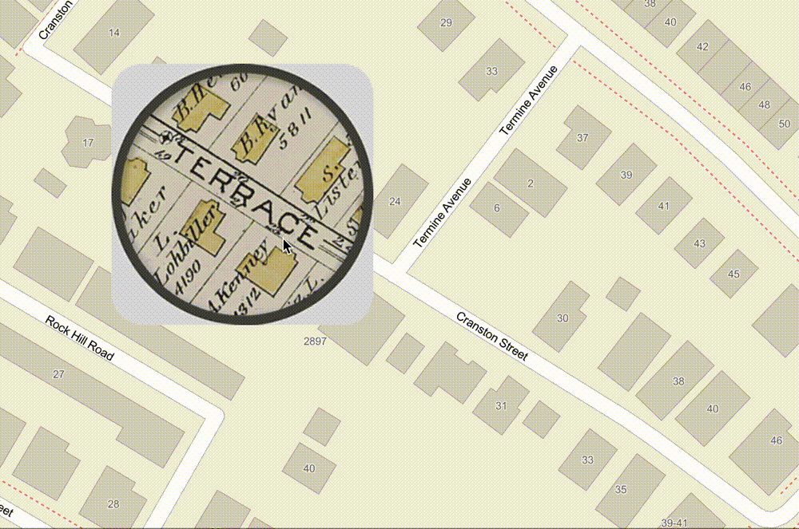
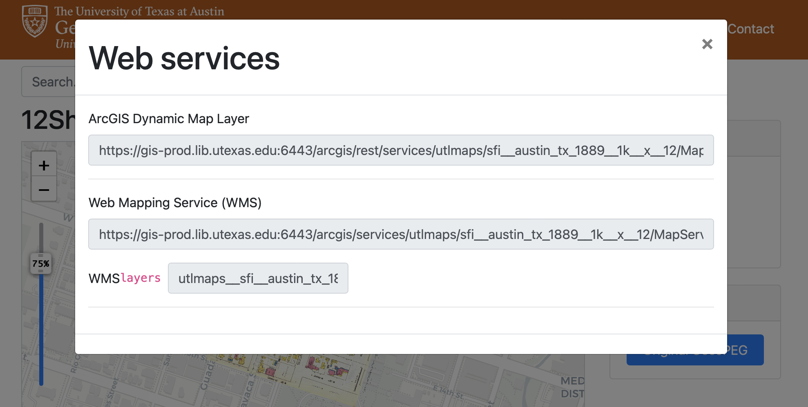

Uploading Georeferenced Maps to ArcGIS Online
Do you want to be able to use a historic map for comparison in one of your ArcGIS Online projects, such as StoryMaps or ArcGIS Experience Builder ?

There are a number of pathways or workflows for accomplishing this. Which one you pick will depend on a. the format your map data is in and b. the software environment you prefer to work in.
Options
Option 1: Use a map hosted as a web link
There are many data sources which offer maps available as hosted web services. For example, if you visit a georeferenced map in the University of Texas at Austin’s data portal
, and select web services, a pop-up window with links will appear. If you copy these links to your clipboard, you can paste them into your ArcGIS Online web application, including StoryMaps or Experience Builder. To do this, see the ArcGIS Online documentation to Add a Tile Layer
.

Unfortunately, while the Harvard Geospatial Library contains nearly 4,000 georeferenced maps – more on how to work with these later– it does not provide access to georeferenced maps as streaming data layers (link URLs).
The easiest way to use georeferenced maps in ArcGIS Online products like StoryMaps or Experience Builder is if your data is available as one of these web links. When you are searching for maps online, check to see if the hosting repository provides these URLs. Then, you can use ESRI’s Add a Tile Layer documentation to add it to your online map in ArcGIS Online.
If you want to use a map from the Harvard Map Collection in your ArcGIS Online web map, you’ll first need to figure out what format the map is in.
| Format | Instructions |
|---|---|
| In the physical map collection, but not yet scanned | Request a scan from maps@harvard.edu , then use either Option 2 or 3 on this page. |
| Scanned and in the Harvard Digital Collections , but not yet georeferenced from the Harvard Geospatial Library | Use our tutorial to generate a tile link layer directly from the Harvard Digital Collections. Then, use ESRI’s Add a Tile Layer documentation to add it to your online map. |
Already georeferenced and available in GeoTIFF format for download from the Harvard Geospatial Library
|
Download the map from the Harvard Geospatial Library. Then, follow the instructions in Option 3 on this page. |
Option 2: Use ArcGIS Pro to publish your map as a tile layer
If you do not already have a web link for your map, and you still need to georeference it, you can use ArcGIS Pro to georeference the map and publish it to your online map.
ArcGIS Pro is a desktop software made by the same company who makes ArcGIS Online and Storymaps. Harvard key holders have access to ArcGIS Pro.
Steps to use option 2
-
Once you have a copy of the map as a picture on your computer (ideally a high-resolution
TIFF, but a high-quality.jpegor.pngcould also work), use our tutorial to georeference the map in ArcGIS Pro. The tutorial will cover how to access the software using your Harvard key. -
Publish the georeferenced map from ArcGIS Pro to ArcGIS Online using this guide .
Option 3: Use the ArcGIS Imagery Extension
If you already have a GeoTIFF, but do not yet have it hosted as a web layer, this is the best way to get your georeferenced maps into an ArcGIS Online web map. Possible scenarios where this might occur are:
- You have georeferenced the map using the open source software QGIS (tutorial ), or otherwise want to generally avoid having to use ArcGIS Pro.
ESRI allows you to upload
GeoTIFFsto ArcGIS Online without using their desktop software, but once the maps are uploaded, you frustratingly cannot add them to a web map or StoryMap (documentation ).
- You already have a
GeoTIFF, acquired from the Harvard Geospatial Library or elsewhere, and want to bypass having to use any desktop software.
Enable the ArcGIS Imagery Extension
-
Make sure you have created an ArcGIS Online account using your Harvard key .
-
Request access to the ArcGIS Imagery tool. It is not free, but Harvard key holders have access. When prompted with which option to request, select,
ArcGIS Image for ArcGIS Online. -
You’ll receive an email when the request is fulfilled. This should not take longer than one business day. To inquire about the status of your request, contact Jeff Blossom at jblossom@cga.harvard.edu .
Upload the GeoTIFF
Once your extension has been enabled, you can upload the GeoTIFF. From My Content select New Item, and choose Imagery Layer. Follow the prompts.
Configure your web project
Once you have added your georeferenced map as a layer in ArcGIS Online, there are many ways to configure the online apps for exploration and comparison with other georeferenced maps or modern datasets.
To learn how, check out the following resources: